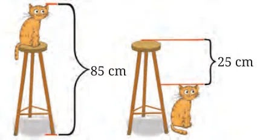

- Form a pair of linear equations for each of the following problems and find their solutions.
- The sum of two integers is +5 and their difference is −21. Find the two numbers.
- The difference between two numbers is 26 and one number is three times the other. Find the numbers.
- The coach of a cricket team buys 7 bats and 6 balls for ₹8880. Later, she buys 3 bats and 5 balls for ₹4000. Find the cost of each bat and each ball.
- The taxi charges in a city consist of a fixed charge together with the charge for the distance covered for every km. For a distance of 10 km, the total amount paid is ₹155 and for a journey of 15 km, the total amount paid is ₹220. What is the fixed charge and the charge per km? How much does a person have to pay for travelling a distance of 25 km?
- A fraction becomes equal to \(\frac{9}{11}\) if 2 is added to both the numerator and the denominator. If 3 is added to both the numerator and the denominator, it becomes equal to \(\frac{5}{6}\). Find the fraction.
- If we add 1 to the numerator and subtract 1 from the denominator, a fraction reduces to 1. It becomes equal to \(\frac{1}{2}\) if we add 1 only to the denominator. What is the fraction?
- Five years ago, Nuri was thrice as old as Sonu. Ten years later, Nuri will be twice as old as Sonu. How old are Nuri and Sonu?
- The sum of the digits of a two-digit number is 9. Also, nine times this number is twice the number obtained by reversing the order of the digits. Find the number.
- Meena went to a bank to withdraw ₹2000. She asked the cashier to give her ₹50 and ₹100 notes only. Meena got 25 notes in all. Find how many notes of ₹50 and ₹100 did she receive?
- A lending library has a fixed charge for the first three days and an additional charge for each day thereafter. Saritha paid ₹27 for a book kept for seven days, while Susy paid ₹21 for the book she kept for five days. Find the fixed charge and the charge for each extra day.
- Form a pair of linear equations and find their common solutions graphically.
10 students of Grade 9 took part in a Mathematics quiz. If the number of girls is 4 more than the number of boys, find the number of boys and girls who took part in the quiz.
- Use the ratios \(\dfrac{a_1}{a_2}\), \(\dfrac{b_1}{b_2}\), \(\dfrac{c_1}{c_2}\), to determine whether the lines representing the following pairs of linear equations intersect at a point, are parallel or are coincident.
- \(5x - 4y + 8 = 0;\ 7x + 6y - 9 = 0\)
- \(9x + 3y + 12 = 0;\ 18x + 6y + 24 = 0\)
- \(6x - 3y + 10 = 0;\ 2x - y + 9 = 0\)
- Which of the following pairs of linear equations have solutions? If they have solutions, find them graphically.
- \(x + y = 5,\ 2x + 2y = 10\)
- \(x - y = 8,\ 3x - 3y = 16\)
- \(2x + y - 6 = 0,\ 4x - 2y - 4 = 0\)
- \(2x - 2y - 2 = 0,\ 4x - 4y - 5 = 0\)
- Half the perimeter of a rectangular garden, whose length is 4 m more than its width, is 36 m. Find the dimensions of the garden.
- Given the linear equation \(2x + 3y - 8 = 0\), write another linear equation in two variables so that the graphs of the pair formed represent (i) intersecting lines (ii) parallel lines (iii) coincident lines.
- Here is a problem that was posed by Mahāvīrāchārya in Gaṇita sāra saṅgraha (c. 850 CE).
The price of 9 citrons and 7 fragrant wood-apples taken together is 107; and the price of 7 citrons and 9 fragrant wood-apples taken together is 101.
O mathematician, tell me quickly the price of each citron and of each fragrant wood-apple.
(Hint: The given problem can be modelled as
\(9x + 7y = 107\)
\(7x + 9y = 101\)
Can you figure out a way of solving these equations without directly using elimination or the substitution method? What is special in this pair of equations? The \(x\) and \(y\) coefficients are interchanged in the 2 equations.
What will happen if we add the pair of equations? What will happen if we subtract the pair of equations? Can the resulting equations be solved to find the values of \(x\) and \(y\)?)
- 5 pencils and 7 pens together cost ₹50, whereas 7 pencils and 5 pens together cost ₹46. Find the cost of each pencil and pen.
- Find the height of the stool.

Chapter 13 · Two Variables One Line